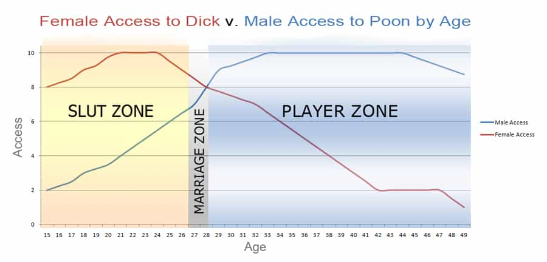

Daryush "Roosh" Valizadeh created ROK in October 2012. You can visit his blog at RooshV.com or follow him on Twitter and Facebook.


Two years ago a man who went by the name of Solomon launched a blog called The Solomon Group. It went on to make a gigantic impact in its short six-month existence, with bootleg copies still in circulation today (pdf). Here’s an excerpt from his introductory post…
As with any wealthy and successful man of influence, Solomon was a pussy magnet. He had 700 wives and 300 concubines. Not surprisingly, this lead to his eventual downfall. It seems not even god-like wisdom can save a man from losing his damn mind when subjected to the coercion and incessant bitching of the fairer sex.
Many men today are members of The Solomon Group. They are successful, knowledgeable and wise in the ways of the world – yet they underestimate how their decisions and interaction with the opposite sex impacts their lives until its too late. In Solomon’s case, his nation began to degrade and his son’s rightful kingdom was divided. Moral of the story: Trust your wisdom and judgment when it comes to women or God is going to fuck you so hard your children will feel it.
This blog is a collection of modern day Proverbs for men derived from personal experience and information gleaned from the most talented writers and insightful commenters in the Manosphere.
On Christmas Day, when everyone was with their families, I sat down to read the entire archive. Here are a few things I highlighted…
Men are responsible for 99.9% of everything worth celebrating, lamenting, embracing and shunning in recorded history. Good and evil are defined, constructed, and introduced to the world by men. Take your societal position seriously, and never allow women or feminized pussyboys to erode what it means to be a man. Never let them use shaming language to strip you of your title.
[…]
…my quest is to have a plethora of women bent over my couch screaming my name while their future White Knight husband is working overtime to save money for the house she’ll eventually take from him in the divorce.
[…]
Jealousy is nature’s way of letting a man know that he has assigned too high of a value to a particular person or event. If you’re living with jealousy over a girlfriend or an ex, you have placed her in a category higher than she deserves.
[…]
Want to know the real reason why women shout “I just want to meet a nice guy”? Its simply because they want the nice guys to identify themselves so they know who not to sleep with.
[…]
As men living in a world where women are nothing more than overgrown children, we’re constantly faced with a sobering reality. While both genders have their good sides and bad sides, society has encouraged women to view their weaknesses as strengths and their strengths as weaknesses. In the end, men are stuck with all of the downside and virtually none of the upside of a woman. Women used to be moody but feminine. Now they’re moody but slutty. They used to be irrational and submissive. Now they’re irrational and manipulative. In short, there was a time when men would suffer through a woman’s flaws because there was a payoff, and women would return the favor by overlooking a man’s flaws. In the end, happy unions for the most part and healthy families were the outcome.
Those days are long gone.
It also included the infamous Slut Zone vs Player Zone graph…

Solomon helps you see American women for who they really are, and how to take advantage of the the times to get as much sex as you can. Click here to download the blog archive in PDF format.
Loot while you can, gentlemen.
Read Next: 21 Tips For Starting A Manosphere Blog